Rough renders made on 2026-11-20 before building (websiteoftheyear step 1c): a hero and one inner section each, at 1440×900 and 390×844. Scores are 1 to 5. The winner is outlined.
A portfolio built like a set of working drawings: bordered sheets, a title block, general notes and schedules, single-stroke lettering, ink on bond with a red pencil. The rough's hero is a live exploded line drawing of an orrery. The final build replaced that with something the rough made obvious: every project's own screenshot shown first as an ink drawing (the last image below is the test), then built under the pointer.
| Fit | Distinctness | Usability | Buildability | Total |
|---|---|---|---|---|
| 4 | 4 | 5 | 5 | 18 |
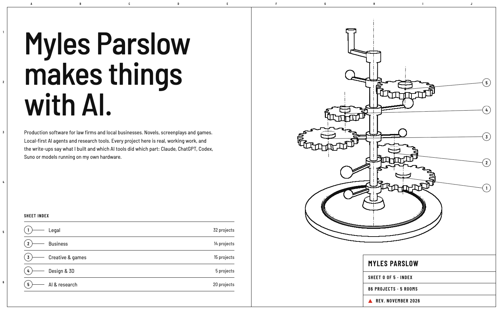
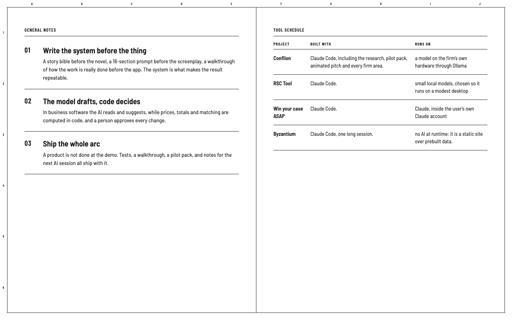
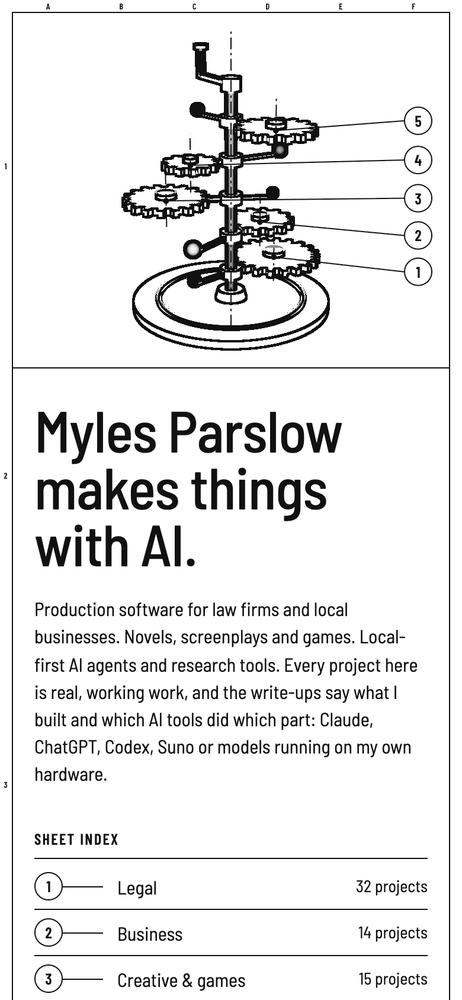
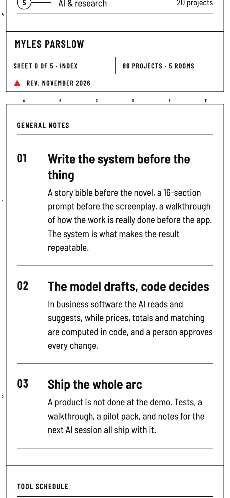
The test that settled it: six of his screenshots turned into ink drawings by an edge filter.
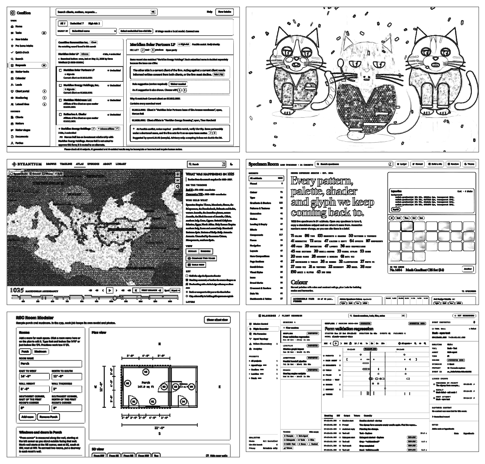
Every project starts as its own write-up: a block of the case study's prose, coloured and weighted by the screenshot under it, with the real screenshot developing out of the text under the pointer. Rejected because app screenshots are too fine to read as pictures at text size, so the plate is a wall of small prose. Its reveal between a "before" layer and the built screenshot was the one detail carried into the winner.
| Fit | Distinctness | Usability | Buildability | Total |
|---|---|---|---|---|
| 4 | 3 | 3 | 4 | 14 |
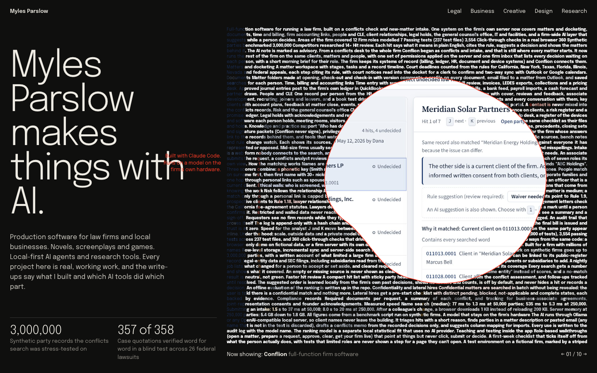
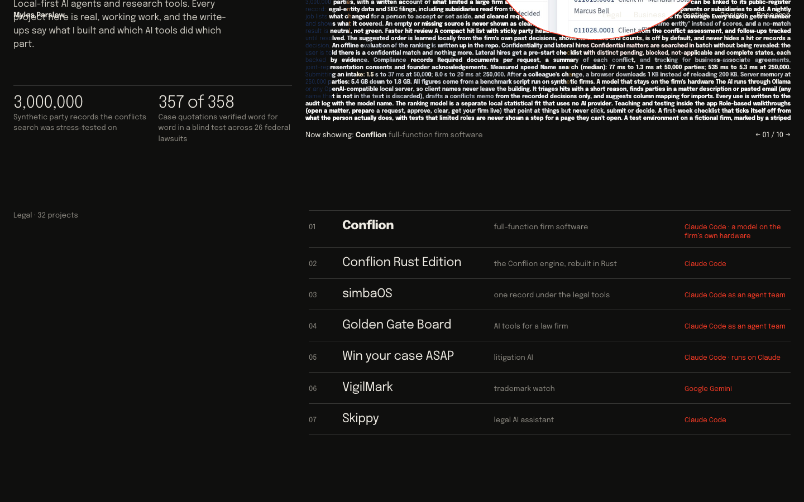
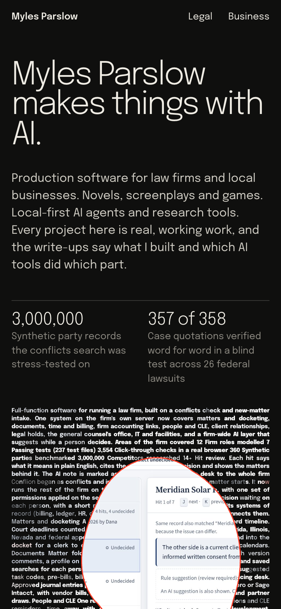
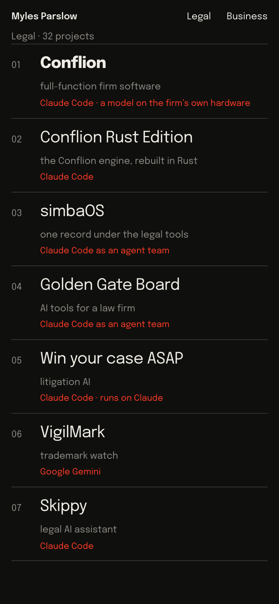
His hanging fuse-bead sculpture: the name strung in beads on fishing line that sway and part around the pointer, room lists hanging from a rail at uneven lengths. Rejected because without a full lighting and depth-of-field treatment it reads as pixel lettering with sprinkles, and the idea lives only in the hero.
| Fit | Distinctness | Usability | Buildability | Total |
|---|---|---|---|---|
| 3 | 5 | 4 | 2 | 14 |
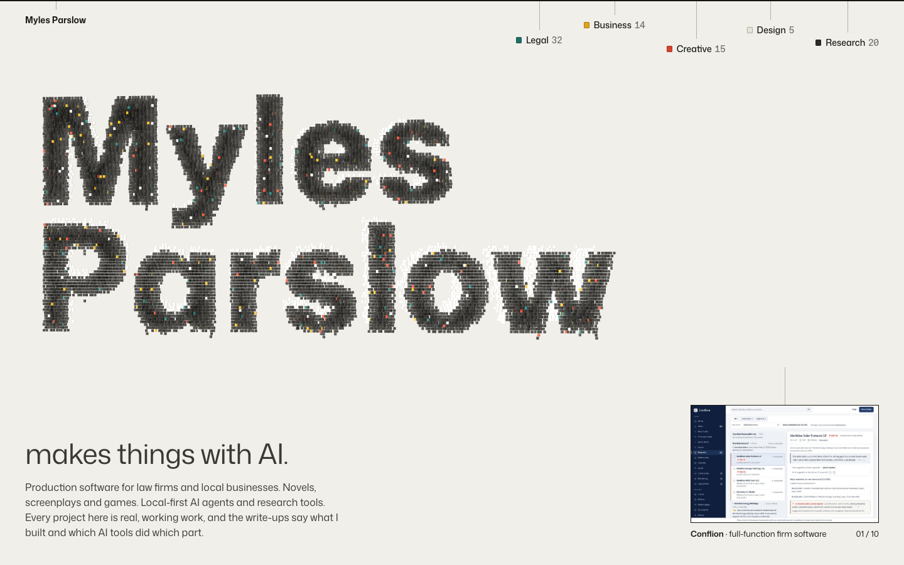
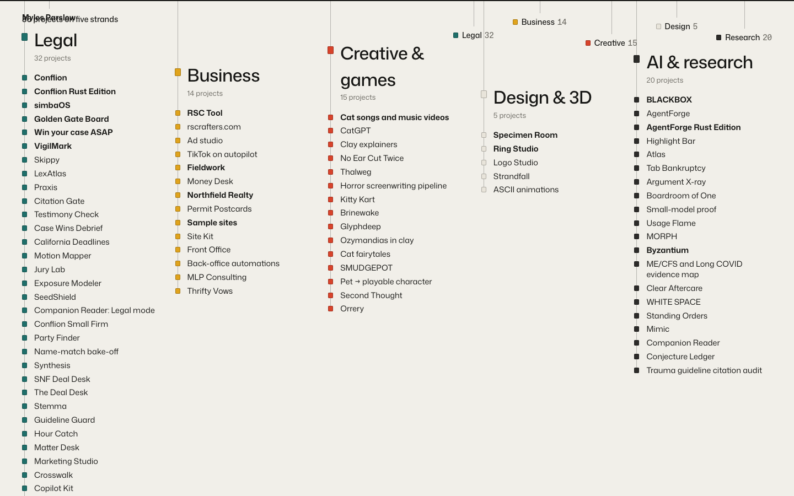
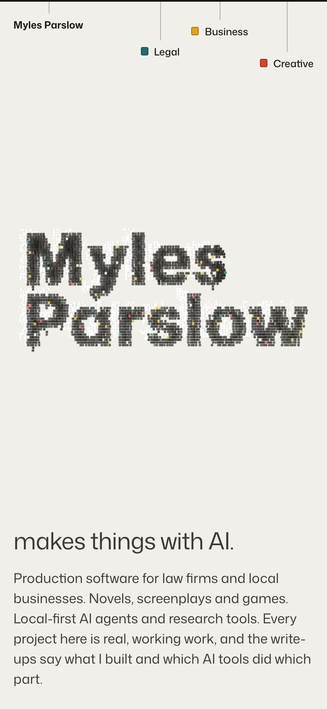
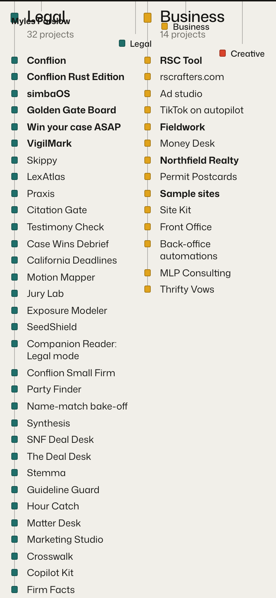
Pairwise knob differences (of 8): A–B 8, A–C 7, B–C 7. A fourth idea, a "which AI did which project" matrix, was dropped before rendering: 74 of the 81 "How it was built" notes name Claude, so it would be one solid column.